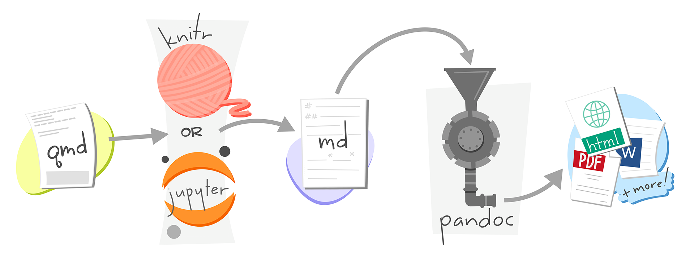
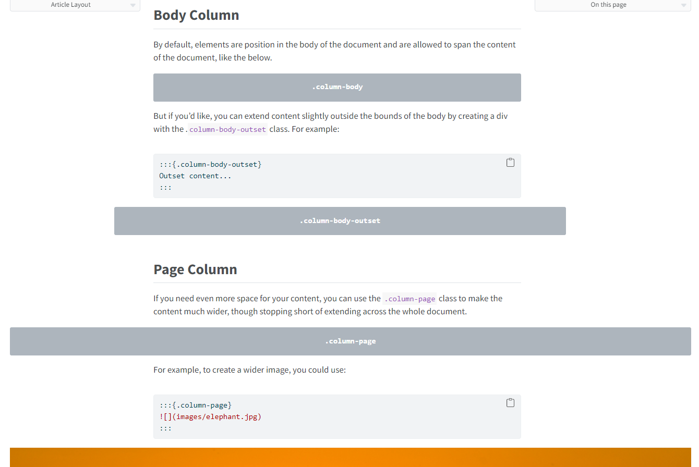
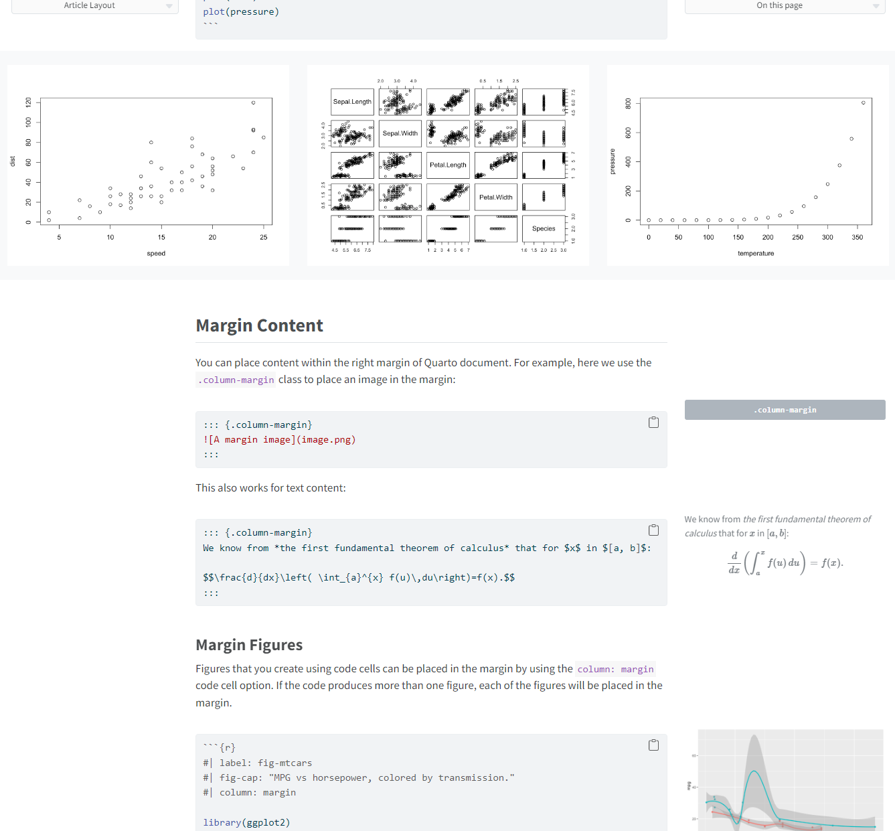

02:00
From rmarkdown to quarto to produce documents
Enhancing scientific publishing through Quarto
July 8, 2024
Callout Blocks

| R Markdown | Quarto |
|---|---|
| Custom Blocks of rmarkdown and bookdown to create and style yourself. | Callout Blocks available in all formats and already styled. |
::: {.callout-note}
## About callouts
Note that there are five types of callout:
`note`, `warning`, `important`, `tip`, and `caution`.
:::About callouts
Note that there are five types of callout: note, warning, important, tip, and caution.
References(Figures, Tables, …)

| R Markdown | Quarto |
|---|---|
Available with bookdown in “book” formats (e.g. gitbook()) or single document variants such as html_document2() |
Cross References available in all formats, for more content and configurable. |
Change of syntax!
- Prefix required on the label in the form
fig-and notfig: - Same syntax as quote with
@labeland not\@ref(label)
References (Figures, Tables, …)

See @fig-quarto-schematic for Alison Horst's illustration of how Quarto works.
{#fig-quarto-schematic}
See Figure 1 for Alison Horst’s illustration of how Quarto works.

Artwork from “Hello, Quarto” keynote by Julia Lowndes and Mine Çetinkaya-Rundel, presented at RStudio Conference 2022. Illustrated by Allison Horst.
Article Layout

| R Markdown | Quarto |
|---|---|
| Available for HTML with distill (Figure layout) ou tufte (Margin content) | Article Layout available for multiple formats and with more flexibility. |


Specific options - Ex: Code tools